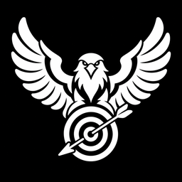

Онлайн-школам
Простраиваю путь от первого рекламного показа до заявки на курс, вебинар или консультацию.

Наталья Силюгина НаписатьМАРКЕТОЛОГ ВК И TELEGRAM
Реклама, сообщество, лендинг, чат-бот
для онлайн-школ и локального бизнеса
5+лет в продвижении
КОМУ ПОМОГАЮ
Подбираю путь клиента под вашу задачу — без лишних инструментов и ненужных расходов
Простраиваю путь от первого рекламного показа до заявки на курс, вебинар или консультацию.
Простраиваю путь от знакомства с услугой до сообщения, звонка или запроса на запись.
Разбираю, что уже работает, нахожу слабое место и собираю понятный путь до обращения.
ПУТЬ КЛИЕНТА
Человеку нужно быстро понять, чем вы полезны, довериться вам и легко связаться
КАК РАБОТАЕМ
Вы заранее понимаете, что будем делать, зачем и к какому результату идём
Что вы предлагаете, кому и какое действие должен сделать человек.
Смотрю рекламу, площадки, материалы и путь клиента до обращения.
Объясняю, что нужно сделать сейчас, а на чём можно сэкономить.
Соединяю рекламу, площадку и способ связи, затем проверяю путь до обращения.
УСЛУГИ
Одну задачу или всю связку — от первого показа до сообщения клиента
Нахожу аудиторию, готовлю объявления и направляю людей на следующий этап воронки.
Подбираю площадки и организую размещения, которые приводят нужных людей.
Создаю изображения, которые привлекают внимание и поддерживают ваше предложение.
Оформляю страницу так, чтобы человек быстро понял, чем вы можете помочь.
Настраиваю ответы, рассылки и путь человека от интереса до обращения.
Собираю понятную страницу, которая объясняет предложение и ведёт к заявке.
Связываю формы, сообщения и рабочие процессы, чтобы не терять заявки и время.
ПЕРЕД ЗАПУСКОМ
Бриф помогает понять задачу, увидеть ограничения и выбрать подходящее решение
ОБО МНЕ
Более пяти лет простраиваю путь от первого рекламного показа до обращения клиента. Моя задача — собрать и настроить воронку. Продажи и закрытие сделки остаются на стороне бизнеса.
СТОИМОСТЬ
Точный состав работ и итоговую сумму согласуем до начала проекта
СЛЕДУЮЩИЙ ШАГ
Напишите, чем занимаетесь и до какого действия нужно довести человека. Я посмотрю, какие этапы и инструменты потребуются